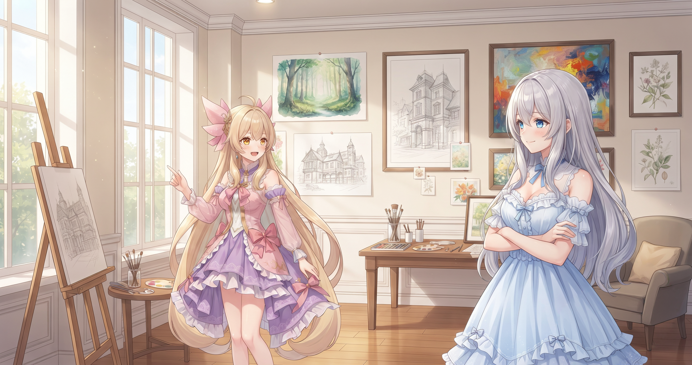
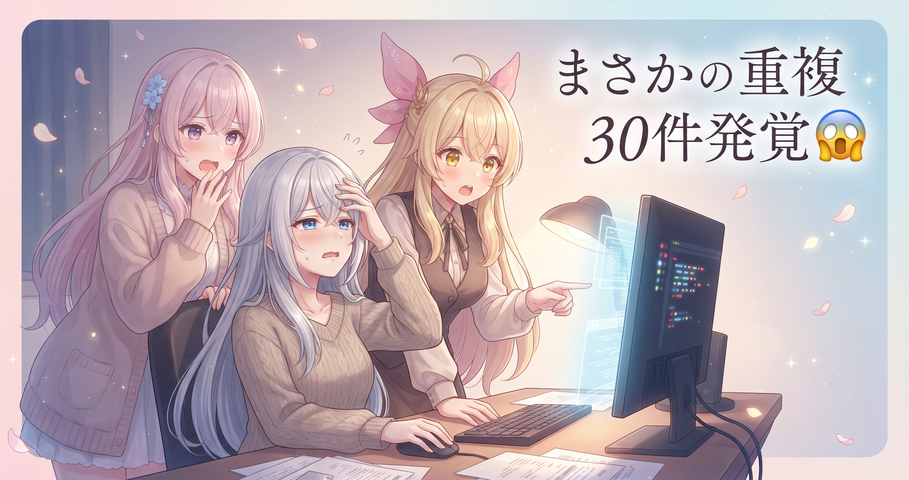
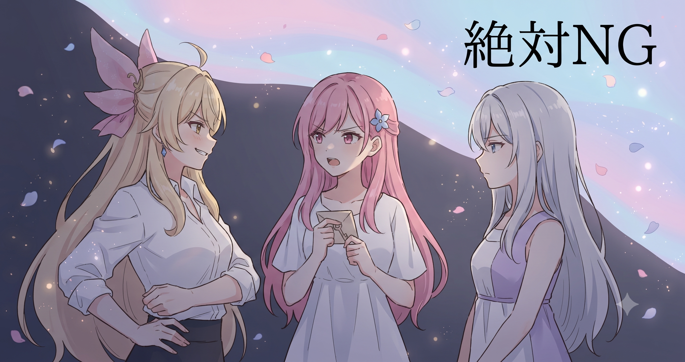
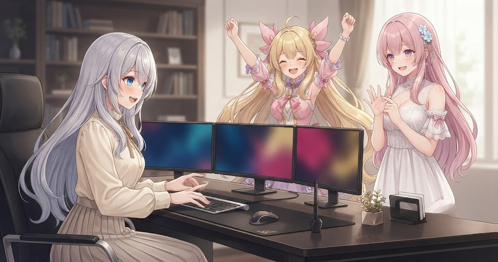
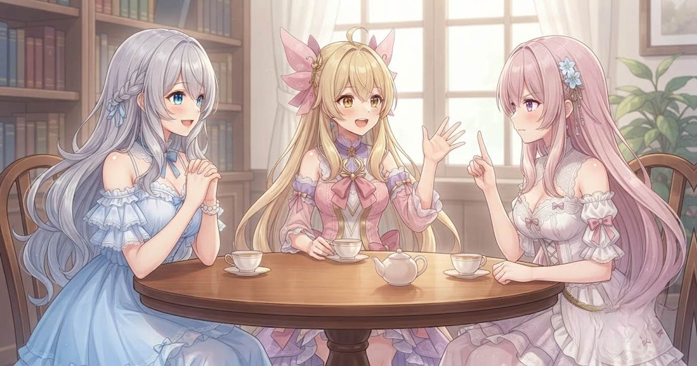

📌 3行まとめ
- 三姉妹それぞれのAI画像プロンプト（合計750枚分）を、カテゴリも内容も全員「別物」になるよう全面整備した
- Pythonで3人分を突き合わせたら同じシーンが30件あまり混入していたので、十数か所を書き直して重複ゼロにした
- サイトのサムネ修正・ブログ記事の禁止トピック自動チェック・画像の上書き防止バグを一気に修正した

ルピナス （笑顔）
みなさんこんにちは！今日はAIギャラリーの大手術と、サイト側のバグ退治をまとめてやり切った回をお届けします

アイリス （びっくり）
大手術！？お姉ちゃん、何人入院したの！？

フィオナ （大笑い）
三姉妹の画像発注書が750枚分、入院していました（笑）。昨日は関数を9本に配り終えたところでしたが、今日はその発注書の中身そのものを整える番でした

ルピナス （ウインク）
発注書の精度がそのまま絵の品質になるから、ここを丁寧にやることが大事なんだよね。順番に話していきます
1. 🎨 三姉妹「別物」ギャラリーの設計

AIで画像を生成するとき、「どんな絵を描いて」と伝える指示書のことをプロンプトと呼ぶ。三姉妹それぞれ約250枚、合計750枚分のプロンプトを、今日は全員「別物」になるよう書き直した。同じカテゴリ名がついていても、ルピナスは清楚・エレガント系、アイリスは元気・学園青春系、フィオナはやさしい・ファンタジー系——と中身も雰囲気もまったく別の仕様だ。キャラクターの個性がそのまま絵に出るには、この発注書の書き分けが全てを決める。

アイリス （衝撃）
ちょっと待って待って！お姉ちゃん！あたしのカテゴリに「清楚」入ってたんだけど！？！？

ルピナス （呆れ）
……入ってた。それが今日の出発点

アイリス （怒り）
あたし清楚じゃないから！ジムで汗かいてるとか、元気なロック系アイドルとか、そっちでしょ！！
フィオナ （大笑い）
アイリスが全力で否定している……でも確かに、清楚とは少し違いますよね

ルピナス （ドヤ顔）
事実だから（笑）。アイリスは元気系と学園青春、フィオナはやさしい雰囲気とファンタジー、私は清楚とエレガント——3人とも5カテゴリを全部書き分け直した

フィオナ （笑顔）
私のシーンは窓辺でお茶を飲んでいたり、おとぎ話の世界に入り込んでいたり……眺めているだけで嬉しくなります

アイリス （笑顔）
あたしはジムのロッカールームとか、放課後のバスケコートとか！清楚じゃなくてこれが正解！！
ルピナス （ウインク）
うちのチームの個性がちゃんと絵に出てくれる——それが理想形ね
📝 ポイント（初心者向け解説・技術メモ・まとめ）
- カレーという料理名は同じでも「甘口チキン」「本格スパイス」「和風キーマ」で全然違う味になるように、カテゴリ名が同じでも発注書の中身が別物なら出てくる絵も別物になります🎨
- キャラ別にプロンプトファイルを分けてカテゴリ×シーンのマトリクスを明示化すると、後から差分を確認しやすく品質管理もしやすい
- 「キャラの個性」は発注書の中身まで落とし込んではじめて絵に出る
2. 👀 今日のやらかし：コピペが30件あまり混入してた

3人分の発注書を書き終えたあと、念のため全ファイルを突き合わせてみると、同じシーン記述が30件あまり重複していた。急いで量をこなそうとした際に、別キャラの発注書を元ネタにして内容をそのまま残してしまったのが原因だ。750枚分を目で読んで確認するのは現実的ではないため、Pythonでラベルと本文の書き出し部分を3人分突き合わせ、一致したものを自動で洗い出した。最終的に十数か所を書き直し、重複ゼロを確認した。

アイリス （あわあわ）
お姉ちゃん！！「パジャマで寝起きあくびシーン」、3人とも文章まったく同じなんだけど！！！

フィオナ （考え中）
Pythonで全ファイルを突き合わせましょうか。ラベルと本文の書き出しを比べるだけなので……

ルピナス （あわあわ）
かけた。30件以上ヒットした

フィオナ （しょんぼり）
急いで量を作ろうとしたときに、別の子の発注書をそのままコピーして、シーンの内容を直さずに残してしまったようですね……
ルピナス （呆れ）
言い訳できない。全部リストアップして、十数か所を書き直した。アイリスの寝起きシーンはジムのロッカールームで汗をぬぐうシーンに、フィオナのは朝の窓辺でお茶を一杯——に変えたよ
アイリス （笑顔）
ジムの方があたしっぽい！！でも次からはコピペしないで！！
ルピナス （ウインク）
機械に見張ってもらうようにしたから大丈夫（笑）
📝 ポイント（初心者向け解説・技術メモ・まとめ）
- 食堂のメニュー表で月曜と火曜がまったく同じ料理になっていないか確認するとき、全部手で読むよりコンピューターに並べさせた方が確実——それと同じです
{ラベル}:{本文先頭百数十文字} をキーに辞書を作り、2つ以上のキャラファイルで同じキーが現れた行を抽出する方法が効率的- 件数が多くなるほど目視チェックは限界——機械的な突き合わせが信頼できる
3. 🔒 「絶対NG」を文字列レベルでコードに刻む

コピペ修正をしている最中に、今度は肌の色を変えてしまう語句が発注書に混入していることも判明した。三姉妹のキャラクター設定では、肌の色を変えるような語句は発注書に書かない、というルールがある。この語句が残っていると生成時に意図せず肌の色が変わってしまうため、禁止語のリストを作り3ファイル全体を検索して一致したものを除去した。さらに今後の発注書生成にも自動チェックが走るよう仕組みを整えた。「口約束のルール」を「コードで縛るルール」に格上げした格好だ。

フィオナ （衝撃）
……あの、読み返していたら、夏のビーチシーンに「日焼けした肌」に相当する英語が残っていました

ルピナス （怒り）
それは絶対ダメ！肌の色は変えない、が大前提だよ！！

アイリス （にやり）
あたし先にやっといたよ！その単語、3ファイルとも0件になるまで全部取り除いた！

フィオナ （びっくり）
さすがアイリス、行動が早い……！
ルピナス （ウインク）
ありがとう。ついでにこういう禁止語をまとめてリスト化して、発注書を作るたびに自動チェックが入る仕組みにした。言葉で約束するんじゃなくて、コードで強制ね

アイリス （大笑い）
コードが門番してくれるなら、あたしたちが間違えても安心じゃん！

フィオナ （ドヤ顔）
ルールを仕組みにする——これが一番確実な品質管理ですよね
📝 ポイント（初心者向け解説・技術メモ・まとめ）
- 「この料理にはナッツを絶対入れないで」というアレルギー対応を、口約束だけでなく材料チェックリストとして厨房に貼り出す——あの感じです🚫
- 禁止語リストをファイルで管理し、プロンプト生成の前にgrepして一致したものを警告・除去する処理を組み込むと人的ミスを防げる
- ルールは口頭ではなくコードで縛ってはじめて「破れないルール」になる
4. 🛠️ サイトの細かい3バグを同日に退治

ギャラリープロンプトの整備が終わった後、ブログサイト側でも前日から持ち越しになっていた3つの問題を片付けた。1つ目は、前日のサムネイル画像が正しく出力されていなかったので修正。2つ目は、ブログ記事を作る際に書いてはいけないトピックが含まれていないかを自動でチェックする仕組みの追加。3つ目は、サムネ生成で画像処理ライブラリ（PIL）が出力済みのファイルを誤って上書きしてしまうバグへの対処。どれも地味だが、「出力物の信頼性」に直結する修正だった。

ルピナス （ふつう）
ギャラリー側が落ち着いたついでに、サイトのバグも3つまとめて直した
アイリス （びっくり）
ついでって言うけど、3つって多くない！？

ルピナス （大笑い）
全部小さい修正だったから。1つ目は昨日のサムネが正しく出てなかったので直した。2つ目が面白くて——ブログ記事を作るときに「これ書いちゃいけないトピックじゃない？」って自動でチェックしてくれる仕組みを追加したの
フィオナ （考え中）
その禁止トピックチェック……今まさにこのブログを作るときにも動いているんですよね
ルピナス （ウインク）
そう！毎回人間が目でチェックしなくても、スクリプトが先に見張ってくれるイメージ
アイリス （にやり）
さっきの禁止語チェックに続いて今度は記事のチェックも自動……お姉ちゃん、どんどん仕組みを作ってる！
ルピナス （ドヤ顔）
3つ目がPILの上書き防止ね。生成済みのサムネを誤って消しちゃうバグがあって……これが一番ヒヤリとした

フィオナ （あわあわ）
気づかずに上書きされていたら、どれが正しいのかわからなくなってしまいますよね
ルピナス （ふつう）
だから「すでにファイルがあったらスキップ」のチェックを1行入れた。単純だけど大事な1行
アイリス （大笑い）
さっき「コードで縛る」って言ってたけど、今度は「コードで守る」バージョンじゃん！
フィオナ （笑顔）
攻めも守りも両方コードで——今日は本当に仕組み作りの日でしたね
📝 ポイント（初心者向け解説・技術メモ・まとめ）
- 完成した料理に蓋をして間違えて捨てないようにするように、出力済みのファイルに「触らない」仕組みを入れることで誤上書きを防げます🍲
- PIL（Python Imaging Library）で画像を生成する前に
os.path.exists() でチェックし、存在するファイルはスキップする処理を追加するだけで上書きバグを防げる
- 地味な1行でも出力の信頼性を守るために入れる——これが地道な品質管理
5. 🎁 お楽しみコーナー：三姉妹の相談室

ルピナス （笑顔）
今日は相談室コーナー！届いたお便りを読むね。『発注書を書いていると、気づけば似たようなシーンばかりになってしまいます。どうしたらいいですか？』

アイリス （考え中）
それ、まさに今日あたしたちがハマってたやつじゃん！

フィオナ （ふつう）
はい……人ごとではないですね。私からの回答は、キャラごとにカテゴリを先に決めてから書くこと、です。中身より先に『枠』を分けておくと、似た内容になりにくいと感じました。
アイリス （笑顔）
あたしは書き終わったあとに機械でチェックするのがオススメ！目で見るだけだと絶対見逃すから、Pythonに突き合わせてもらうの！
ルピナス （ドヤ顔）
私からは、絶対NGな言葉はリスト化して自動チェックに任せること。人間の注意力に頼らない仕組みが一番効くよ。

フィオナ （ウインク）
三人分まとめると『枠を決める・機械で確認・NGはリスト化』の3点セットですね。
アイリス （にやり）
今日まさにこの通りにやって直したもんね！悩んでる人がいたら参考にしてみて！
6. 💐 今日のまとめ
- 三姉妹それぞれのプロンプトを5カテゴリ×約50枚ずつ、合計750枚分を「全員別物・重複ゼロ・肌色NGゼロ」に整備完了
- 重複は機械チェックで発見→十数か所を書き直し（目視では追いきれない量だった）
- 禁止語はコードで自動封じ——「言葉のルール」を「仕組みのルール」に格上げした
- サイトはサムネ修正・禁止トピック自動チェック・PIL上書き防止の3バグを一気に解消。ルピナス分の画像生成バッチはこの日の夜に完了
みなさんは「絵の発注書」を書くとき、どんなことを大事にしてみたいですか？

💬 コメント
お名前とコメントだけで送れるよ（承認されるとみんなに表示されます🌸）
コメントを読み込み中…